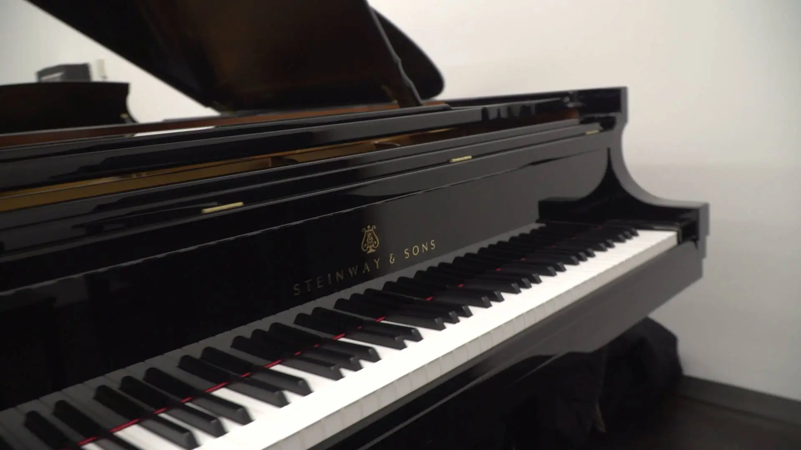
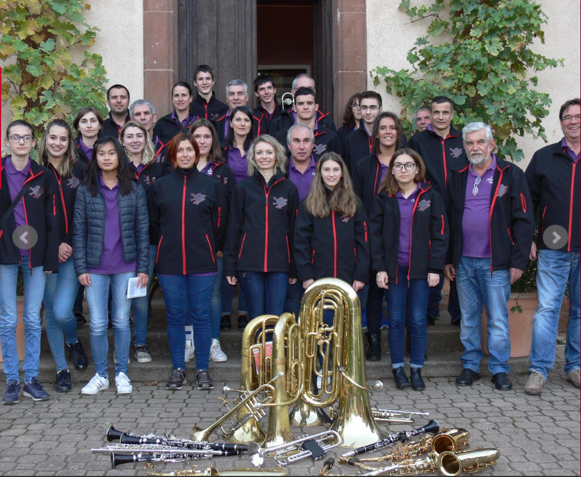
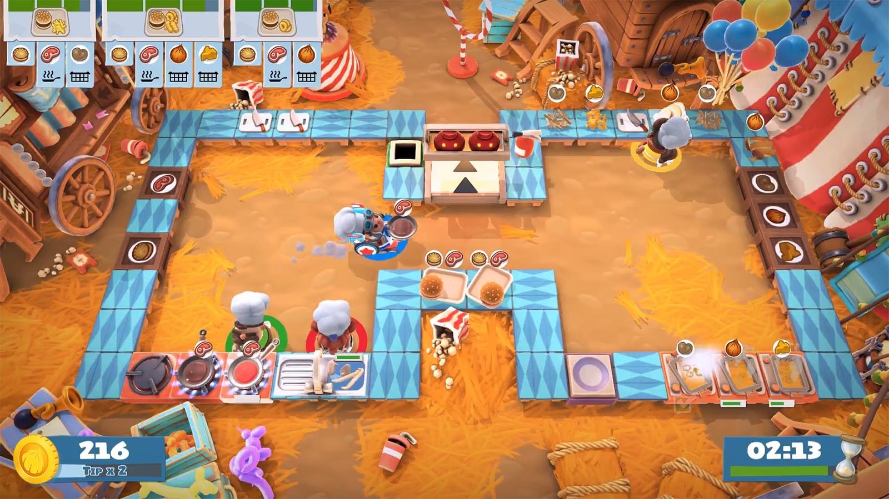
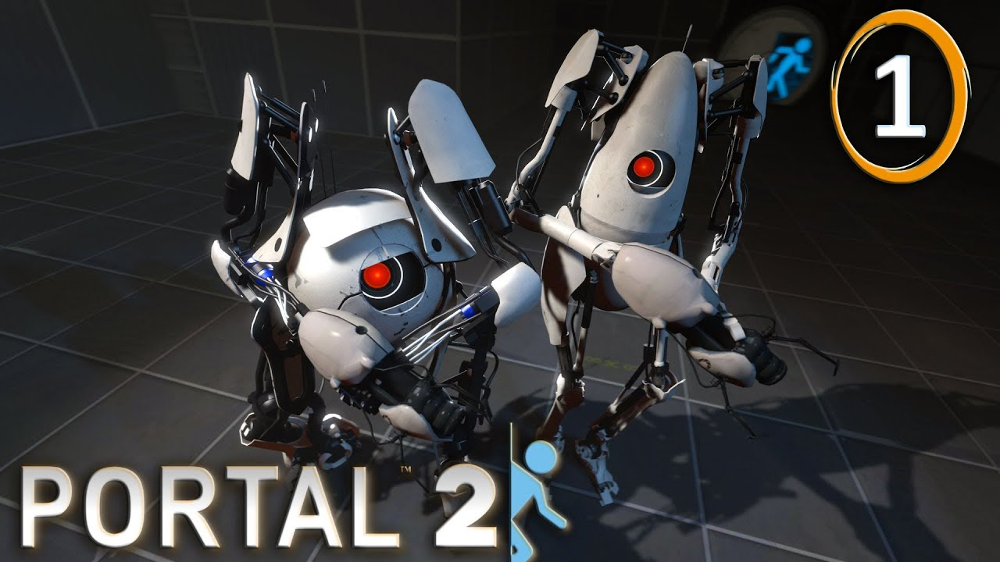
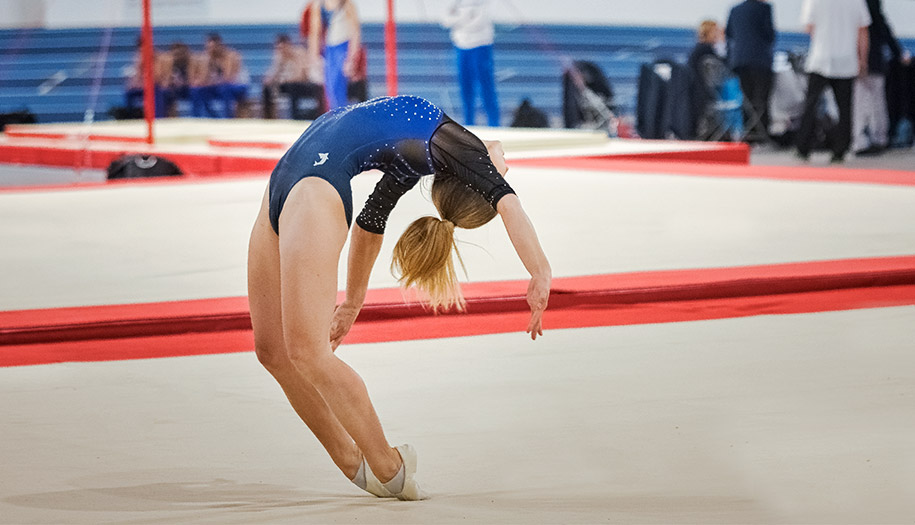
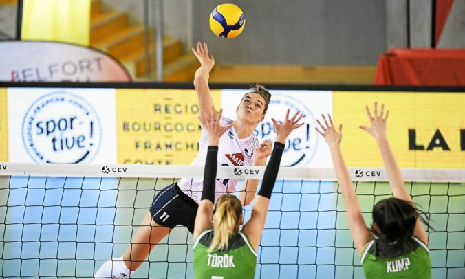

Mes centres d’intérêts, activités et loisirs
J’ai commencé à nager lorsque j’étais en CE2 car je détestais mettre des brassards lors de sorties scolaires et de ne pouvoir rester que dans le petit bassin. J’ai donc intégré le club de natation de mon village: le CNCV . Je nageais tous les jours sauf le dimanche lors des vacances d’été. Il y avait aussi deux séances de musculation par semaines le soir. Ce que j’aimais le plus était les compétitions et le fait de me sentir glisser sur l’eau. Nous avions aussi des cours de sauvetage le soir et à l’année de nos 15 ans, on pouvait aller à un weekend de sauvetage où on pratiquait et simulait des noyades. J’ai arrêté la natation en L1 mais je prends toujours du plaisir à nager dès que je suis dans un bassin.
 J’ai commencé le solfège lorsque j’étais en CM2. Un an plus tard, j’ai pu commencer à jouer. J’ai pris comme premier instrument le piano car j’avais vu et entendu beaucoup de mélodies que je trouvais très belles et je voulais pouvoir jouer de la même façon. Lorsque j’étais en troisième, j’ai pu prendre un nouvel instrument. J’ai choisis la clarinette car une amie jouais dans l’harmonie du village (celle de la photo en haut) et je voulais faire de même. J’ai tout arrêté lorsque je suis allée à l’IUT car j’avais peur de ne plus avoir le temps. Mais dès que je rentre chez moi, je joue des airs de piano et de clarinette car ça me manque énormément. Je me rend compte d’ailleurs que j’ai perdu énormément de souffle.
 J’aime beaucoup les jeux vidéos. J'ai joué à « cook serve delicious 2 » qui est un jeux de gestion d’un restaurant en anglais. J'ai dévouvert « portal 2 » avec mon copain C’est un jeu de réflexion et de stratégie sur PC dont le but du jeu est de s’échapper des différentes pièces où nous nous trouvons. J'ai aussi joué à « Overcooked ». C’est un jeu d’adresse qui consiste à préparer, cuisiner et servir des plats composés avant que le client ne parte. J'ai bien sûr ouvert ma culture sur les jeux vidéos depuis et ne cesse d'en découvrir des nouveaux.
 Pour finir, j'aime beaucoup le sport et je fais en sorte d'en pratiquer chaqué année afin de garder une condition physique équilibrée. Malheuresement, avec le covid, cela n'a pas pu être possible lorsque j'étais au DUT. Mais j'ai pu faire de la gymnastique au début de la première année de DUT et j'ai aussi commencé le volley en L3. J'aime beaucoup me dépenser et faire du sport me permet aussi de m'aérer l'esprit.